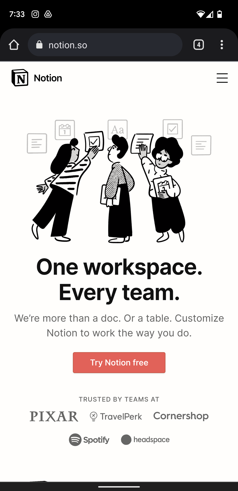
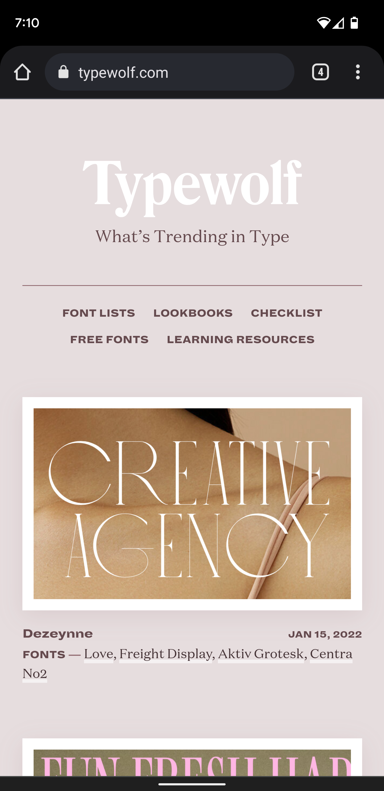
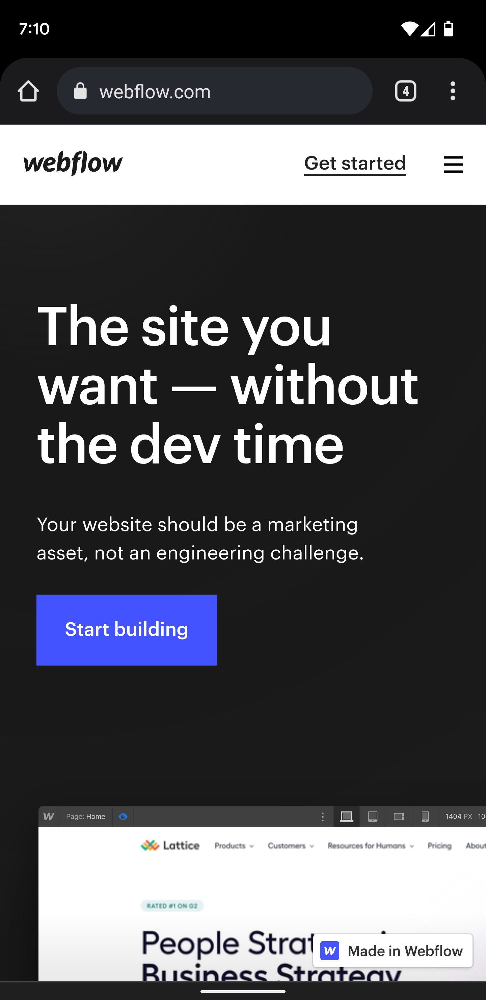

Visual Hierarchy
Notion
notion.so This is a great example of how visual hierarchy is applied in order to make a clear call to action. The visual hierarchy lets the user understand the product Notion offer in a clear way, because it becomes easier to read, improving accessibility. Notion applied visual hierarchy with different font sizes, font weights, text colors, and capitalization.
PARC: Repetition
Typewolf
typewolf.com Typewolf is a blog where you can find beautiful websites with amazing font selection. It is important for this website to use repetition correctly in order to show consistency and better performance to improve the user experience and increase the traffic. Repetition is applied in how we can see the different posts in a nice structure. We can see the name of the website, a close up and the font used in every blog post.
PARC: Contrast
Webflow
webflow.com Accessibility plays an important role in Webflow's website. Through contrast between the different colors of the background, text and buttons, Webflow page has a great design, with colors that match and text we can read. They improve contrast using almost black backgrounds, almost white text and a shiny blue to grab your attention.